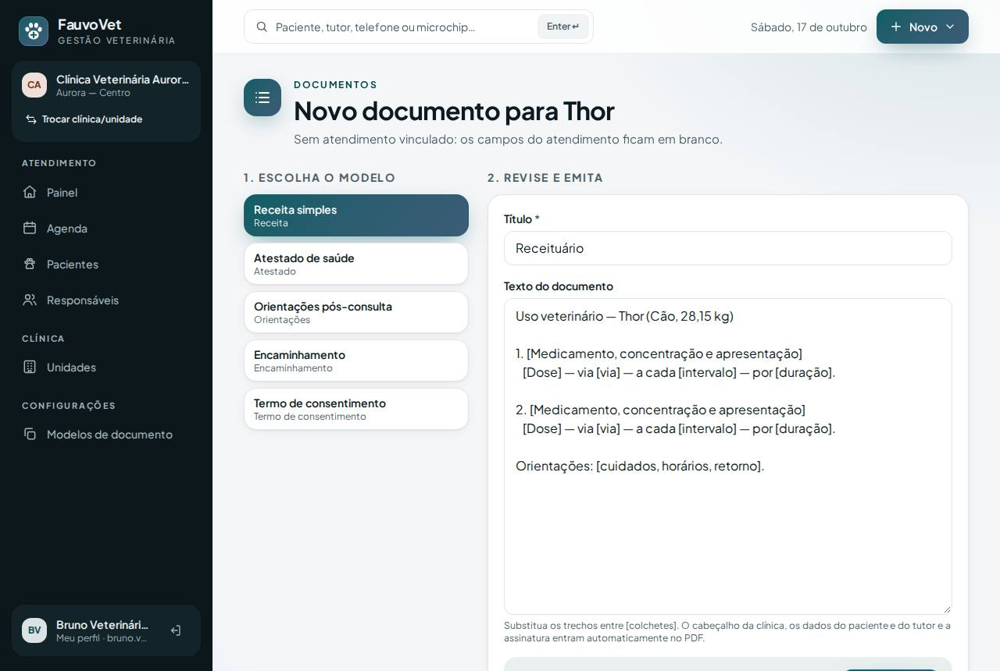
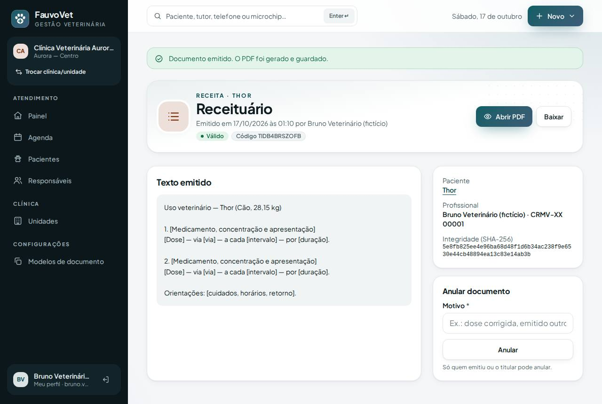
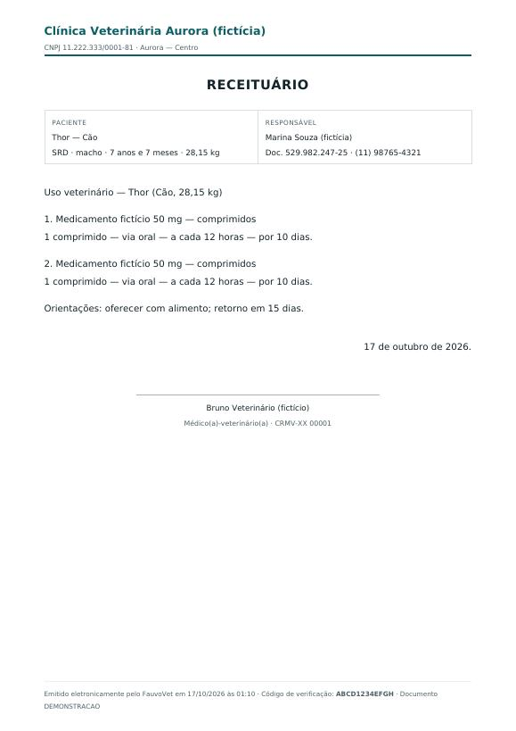

Receitas, atestados, orientações, encaminhamentos e termos em PDF
ID: 2026-10-17-documentos-pdf · Data: 17/10/2026 · Versão: 0.7.0 · Módulo: G. Documentos, receituários e autorizações · Estado: implementado e testado localmente; publicação a cargo do proprietário (seção 7)
1. Objetivo
Emitir os documentos do dia a dia direto da ficha do paciente ou do atendimento:
- o texto vem preenchido com os dados reais;
- o veterinário ajusta o que precisar;
- o sistema gera um PDF com a identidade da clínica, a identificação do paciente e do tutor e a assinatura com CRMV;
- o PDF fica guardado de forma privada e imutável.
Critérios de aceite:
- modelos por clínica, só com variáveis permitidas;
- PDF preservado, com integridade conferida;
- editar o modelo não muda documentos já emitidos;
- receita e atestado só pelo veterinário com CRMV;
- nada de documentos entre clínicas;
- recepção não acessa.



2. O que mudou
Para quem usa
- Emitir: na ficha do paciente (seção Prontuário → Documentos → Emitir) ou no atendimento (Documentos deste atendimento → Emitir). Neste caso, os dados do atendimento entram no texto: queixa, conduta, orientações e diagnósticos confirmados.
- escolha o modelo;
- revise o texto: os trechos entre [colchetes] são lembretes para completar;
- clique em Emitir PDF.
- 5 modelos iniciais, criados no primeiro uso: Receita simples, Atestado de saúde, Orientações pós-consulta, Encaminhamento e Termo de consentimento.
- O PDF traz:
- cabeçalho com nome, CNPJ/CPF e unidade da clínica, numa faixa com a cor da clínica;
- quadro com paciente (espécie, raça, sexo, idade, peso) e responsável (documento, telefone, endereço);
- o texto;
- local e data;
- assinatura com nome e CRMV. No termo de consentimento, há também a linha de assinatura do tutor;
- no rodapé, "emitido eletronicamente", data e hora, e o código de verificação.
- Documento emitido: abrir ou baixar o PDF, ver o texto e a integridade (SHA-256) e anular com motivo (quem emitiu ou o titular). Anulado, o PDF original continua guardado.
- Configurações → Modelos de documento (titular, gestão e veterinário):
- criar e editar modelos, com a lista de variáveis permitidas ao lado;
- salvar uma alteração de texto cria a próxima versão;
- variável desconhecida é recusada.
- Meu perfil (clicando no seu nome no menu): nome e CRMV. O CRMV é obrigatório para receitas, atestados e encaminhamentos.
- Mensagens de erro agora usam o nome do campo em português ("o título", "o texto"…).
Quem pode
| Ação | Quem |
|---|---|
| Emitir receita, atestado, encaminhamento | Médico-veterinário, com CRMV cadastrado |
| Emitir orientações e termo de consentimento | Equipe clínica (veterinário, assistente, titular) |
| Ver e baixar documentos | Equipe clínica. Cada leitura e download fica registrado. |
| Anular | Quem emitiu ou o titular |
| Modelos | Titular, gestão, veterinário |
| Recepção, financeiro, estoque, banho e tosa | Sem acesso |
Arquivos
- Dependência nova:
dompdf/dompdf3.1.6 (PHP puro; LGPL-2.1, usado sem modificação), comphp-font-lib,php-svg-lib,html5ephp-css-parser. - Migração:
2026_10_17_000001_create_document_tables(document_templates,issued_documents). - Código:
app/Documents/Placeholders.php(lista de variáveis),app/Services/DocumentService.php, controllersDocumentController,DocumentTemplateController,ProfileController; modelsDocumentTemplate,IssuedDocument(imutável). - Telas:
documents/*(incluipdf.blade.php, o layout do PDF),profile/edit. Permissão novadocuments:templates. - Diagnóstico de deploy: passa a exigir a extensão PHP
dome a mostrarprivate_storage_writable. - Seed: CRMV fictício (
CRMV-XX 0000n) para os veterinários de teste. - Testes:
DocumentTest(10, sendo 1 de isolamento), E2Edocuments.spec.ts, axe nas telas de documentos e perfil. - Documentação: ADR-014, IDEAS (verificação pública por código, logo e timbre, controle especial/ICP, prescrição estruturada).
3. Pré-requisitos
No seu computador: composer install (feito pelo pnpm bootstrap) para baixar o dompdf. No servidor: PHP com dom e mbstring (o diagnóstico confere) e a pasta app-fauvovet/storage/app/private gravável (criada na primeira instalação).
Git Bash/macOS: NOT RUN.
4. Passo a passo (no seu computador)
cd ~/code/fauvovet→git pull --ff-only→pnpm bootstrap(instala o dompdf) →pnpm db:startpnpm db:migrate→pnpm db:seed(grava os CRMV fictícios)pnpm dev→ entre comobruno.vet@aurora.exemplo.test, abra o Thor → Prontuário → Documentos → Emitir.
5. Como testar
Automático
pnpm verify --e2e
pnpm test:tenant-isolationManual
- Como Bruno, no Thor, emita uma Receita simples sem trocar os colchetes: aparece o aviso dos trechos a completar. Complete e emita. Abra o PDF e confira cabeçalho, paciente, tutor, assinatura com CRMV e código.
- Abra um atendimento finalizado → Documentos deste atendimento → Emitir → Encaminhamento: a queixa e os diagnósticos confirmados aparecem no texto.
- Anule o documento com um motivo: ele fica riscado na lista e mostra "Documento anulado".
- Em Meu perfil, apague o CRMV e tente emitir uma receita: o sistema pede o CRMV.
- Como Ana, em Modelos de documento:
- edite o atestado: a versão sobe;
- escreva
{{paciente.senha}}no texto: a variável é recusada.
- Como Carla (recepção): nenhuma seção de documentos.
- Como Diana (clínica B): o endereço de um documento da clínica A responde 404.
6. Performance e usabilidade
- Geração do PDF: ~58 ms por documento (média de 10, local); receita de ~23 KB.
- Download: o servidor confere o SHA-256 do arquivo (custo desprezível para PDFs desse tamanho).
- Emitir leva 3 ações: modelo, ajuste e emitir. Os dados do paciente, do tutor e do profissional nunca são digitados.
- Acessibilidade: o axe (WCAG 2.2 AA) não acusou violações nas telas de emissão, documento emitido, modelos e perfil, no computador e no celular.
7. Implantação na Locaweb (1 migração + PDFs em disco)
Backup do banco antes. A partir desta versão, o backup também inclui a pasta dos PDFs (passo 11).
- Terminal:
cd ~/code/fauvovet→git pull --ff-only→pnpm bootstrap→pnpm db:start→pnpm verify --e2e→pnpm deploy:package→pnpm deploy:copiar - Painel Locaweb: backup (exportação) do banco.
- Terminal:
pnpm deploy:token. - FileZilla:
.envcomDEPLOY_TOOLS_ENABLED=true+ linha nova do token → enviar → apagarbootstrap/cache/config.php(se existir). - FileZilla:
C:\fauvovet-deploy\app-fauvovet→/app-fauvovet, tudo excetostorage, com Sobrescrever. A pastavendoragora traz o dompdf. - FileZilla:
C:\fauvovet-deploy\public_html\fauvovet→/public_html/fauvovet, com Sobrescrever. - Terminal (sem HTTPS:
http+export FAUVOVET_ALLOW_HTTP=1):export FAUVOVET_DEPLOY_TOKEN='TOKEN_NOVO' pnpm deploy:remote https://dradeboragaldino.com.br/fauvovet diagnostico # confira: extensions_missing: [] · private_storage_writable: true · pending_migrations: 1 pnpm deploy:remote https://dradeboragaldino.com.br/fauvovet migrar # exit_code: 0 pnpm deploy:remote https://dradeboragaldino.com.br/fauvovet otimizar # tudo 0 - FileZilla:
DEPLOY_TOOLS_ENABLED=false→ enviar → apagarbootstrap/cache/config.php. - Terminal:
SMOKE_URL=https://dradeboragaldino.com.br/fauvovet pnpm smoke(5 PASS) →unset FAUVOVET_DEPLOY_TOKEN FAUVOVET_ALLOW_HTTP - Navegador:
- em Meu perfil, cadastre o seu CRMV;
- num paciente fictício, emita um documento e abra o PDF.
- Backup dos PDFs (rotina, a partir de agora): no FileZilla, baixe
/app-fauvovet/storage/app/private/documentspara um local seguro junto com o backup do banco. Os PDFs não ficam no banco.
Se o diagnóstico mostrar dom em extensions_missing, peça à Locaweb para habilitar a extensão (ou troque a versão do PHP no painel). Sem ela, a emissão de PDF falha.
Sem HTTPS válido, emita apenas documentos de pacientes fictícios.
8. Rollback
- Código: reenvie o pacote anterior (
.deploy/fauvovet-ca61106) e rode o otimizar. As tabelas e os PDFs podem ficar; a versão anterior não os usa. - Banco: restaure o backup do passo 2. Os registros de documentos emitidos depois dele somem, mas os PDFs continuam na pasta e podem ser apagados com segurança.
- Local:
git revertdo commit enode scripts/php.mjs artisan migrate:rollback --step=1(só no banco de desenvolvimento).
9. Troubleshooting
| Sintoma | Causa e solução |
|---|---|
| "Cadastre seu CRMV em Meu perfil…" | Receita, atestado e encaminhamento exigem CRMV. Clique no seu nome no menu → Meu perfil. |
| Não aparece Receita na lista de modelos | Seu papel não é Médico-veterinário. |
| "Ainda há trechos entre colchetes…" | Complete os lembretes [assim] ou marque "emitir mesmo assim". |
| "Variáveis não reconhecidas" | Use só as variáveis da lista, escritas exatamente igual, por exemplo {{paciente.nome}}. |
| Erro 500 ao abrir o PDF | O arquivo sumiu ou foi alterado no servidor (o hash não confere). Restaure a pasta storage/app/private/documents do backup. |
| Erro ao emitir no servidor | Veja o laravel.log. Causas comuns: extensão dom ausente ou storage/app/private sem permissão de escrita (diagnóstico: private_storage_writable). |
10. Evidências e status
| Verificação | Status | Detalhe |
|---|---|---|
pnpm verify --e2e | PASS | 9/9 etapas |
| PHPUnit | PASS | 127 testes / 1.110 asserções (10 novos de documentos) |
| Isolamento | PASS | 33 testes (novo: documento, PDF, anulação, modelo e atendimento de outra clínica → 404) |
| Escape de HTML no PDF | PASS | <script> e <b> no texto saem como texto |
| PDF visualmente conferido | PASS | Renderizado com poppler local (captura acima) |
Geração no servidor da Locaweb (extensão dom) | NOT RUN | Conferir no diagnóstico (seção 7) |
Commit: registrado no docs/PROGRESS.md após a sincronização.
Próximo passo: anexos privados no prontuário: exames, imagens e PDFs enviados pela clínica, validados por tipo e tamanho, guardados fora da área pública e baixados só por quem tem acesso.